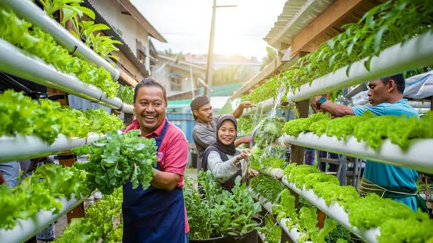

Menanam Bersama
Menghijaukan sudut lingkungan dengan tanaman hias, sayuran, dan pohon peneduh.
TUMBUH BERSAMA, MULAI DARI SEKITAR
Ruang Hijau adalah komunitas warga yang bergerak bersama untuk membuat lingkungan lebih bersih, asri, dan nyaman melalui kegiatan sederhana yang bisa dilakukan siapa saja.

TENTANG RUANG HIJAU
Komunitas Ruang Hijau dibentuk oleh sekelompok warga yang ingin merawat lingkungan tempat tinggalnya. Kami mengadakan kerja bakti, menanam tanaman, memilah sampah, dan berbagi pengetahuan tentang kebiasaan ramah lingkungan.
Kami percaya perubahan yang bertahan lama berawal dari kebiasaan kecil yang dilakukan secara konsisten.
Baca profil lengkap →YANG KAMI LAKUKAN
Menghijaukan sudut lingkungan dengan tanaman hias, sayuran, dan pohon peneduh.
Mengajak warga memilah sampah dari rumah dan mengurangi penggunaan plastik sekali pakai.
Berbagi informasi sederhana agar kebiasaan ramah lingkungan mudah diterapkan.